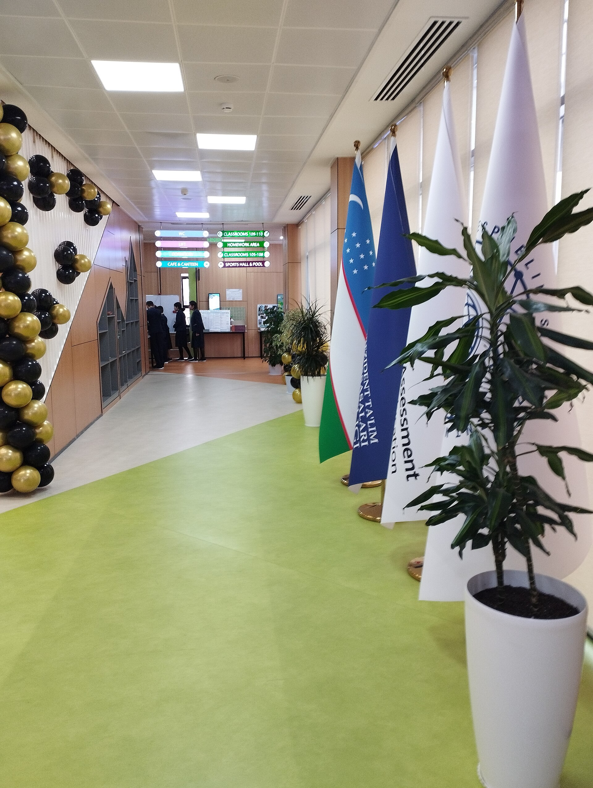

Результаты PISA-2025: Узбекистан лидирует в регионе по естественным наукам, в Казахстане снизился показатель по математике
В исследовании ОЭСР Узбекистан с 438 баллами показал самый высокий результат в Центральной Азии и вырос на 83 балла по сравнению с 2022 годом — это самый большой скачок среди всех участников.

Организация экономического сотрудничества и развития (ОЭСР) обнародовала результаты международного исследования PISA-2025. Показатели государств Центральной Азии остались ниже среднего по ОЭСР, однако по отдельным предметам Узбекистан и Казахстан набрали больше баллов, чем ряд членов Европейского союза.
PISA — международная система оценки, которая раз в три года измеряет знания 15-летних учащихся по чтению, математике и естественным наукам. Цикл 2025 года сделал особый акцент на естественных науках и впервые ввёл новый раздел по решению задач с помощью вычислений (computational problem solving).
Кто и как участвовал
Казахстан, Кыргызстан и Узбекистан участвовали в исследовании с национальной выборкой. Таджикистан участвовал не по всей стране, а только по городу Душанбе. Туркменистан в исследовании не участвовал.
Естественные науки
- Узбекистан — 438 баллов
- Казахстан — 420 баллов
- Кыргызстан — 363 балла
- Таджикистан (Душанбе) — 334 балла
Показатель Узбекистана по естественным наукам вырос на 83 балла по сравнению с циклом 2022 года. По данным ОЭСР, это самый большой рост, зафиксированный в рамках одного цикла среди всех систем-участниц.
Математика и чтение
По математике Казахстан набрал 414, Таджикистан — 382, Кыргызстан — 364 балла. Показатели по чтению составили соответственно 385, 368 и 344 балла.
Результат Казахстана по математике снизился примерно на 12 баллов по сравнению с 2022 годом — это было оценено как статистически значимое снижение для страны. Меньшие снижения по естественным наукам и чтению статистически значимыми признаны не были.
Таджикистан: учащихся с высокими результатами почти нет
Как сообщает издание Asia-Plus, при оценке, проведённой по Душанбе, доля учащихся, показавших результат высокого уровня по основным предметам, практически не зафиксирована. Этот показатель обычно отражает, в какой мере система образования развивает самых сильных учащихся.
Как читать баллы
На шкале PISA применяется приблизительное правило, согласно которому около 20 баллов соответствуют результату одного года обучения, однако сама ОЭСР рекомендует использовать это сопоставление с осторожностью. Кроме того, при интерпретации результатов следует учитывать состав выборки, уровень отсева из школ и условия периода проведения теста.
В случае Узбекистана часть быстрого роста может быть связана и с методологическими факторами: страна начала участвовать в PISA относительно недавно, и структура выборки может меняться от цикла к циклу. В докладе ОЭСР такие изменения оговариваются отдельно.
Политический контекст
В последние годы Узбекистан объявил ряд реформ в школьном образовании: повышение зарплат учителей, расширение сети президентских школ и специализированных учреждений, регулярное участие в международных оценках. В Казахстане же дискуссия о качестве образования усилилась после последних результатов.
Для государств Центральной Азии результаты PISA используются и как ориентир при обсуждении образовательных проектов с международными финансовыми институтами.
Для диаспоры
Что такое PISA и как она проводится
PISA (Programme for International Student Assessment) — международная оценка, проводимая ОЭСР раз в три года с 2000 года. Она тестирует 15-летних учащихся и предназначена для измерения не уровня заучивания школьной программы, а навыка применения знаний в практических ситуациях.
В каждом цикле один предмет выбирается в качестве основного. В цикле 2025 года акцент был сделан на естественных науках. Вместе с тем впервые был введён раздел решения задач с помощью вычислений (computational problem solving) — он проверяет навык решения логических заданий в цифровой среде.
Исследование проводится на основе выборки: из каждой системы школы и учащиеся отбираются случайным образом. Поэтому результаты представляются как оценка по стране в целом.
Почему важен вопрос выборки
При сопоставлении результатов PISA особое значение имеют методологические аспекты. Во-первых, доля 15-летних, обучающихся в школе, различается в разных странах; в системах с высоким уровнем раннего отсева средний балл может оказаться искусственно выше.
Во-вторых, Таджикистан в этом цикле участвовал не с национальной выборкой, а только по городу Душанбе. Показатели столицы обычно выше среднего по стране, поэтому напрямую сопоставлять этот результат с национальными показателями других государств было бы неверно.
В-третьих, поскольку Туркменистан в исследовании вообще не участвовал, полной картины по региону нет.
Образовательные реформы в Узбекистане
В последние годы Узбекистан объявил ряд изменений в школьном образовании: поэтапно повышались зарплаты учителей, расширялась сеть президентских школ и специализированных учреждений, было налажено регулярное участие в международных оценках.
Наряду с этим было принято решение и по языковой политике: 10 сентября Сенат одобрил новую редакцию узбекского алфавита из 28 букв и одного апострофа. Представивший документ сенатор отмечал, что изменение связано не только с орфографией, но и с применением языка в цифровой среде.
Дискуссия в Казахстане
Статистически значимое снижение показателя по математике в Казахстане усилило дискуссию о качестве образования. Страна долгие годы объявляла приоритетным образование по научно-техническому направлению.
По естественным наукам же страна зафиксировала долгосрочный рост — этот показатель улучшался на протяжении нескольких циклов.
Образовательная инфраструктура региона
Доля населения школьного возраста в государствах Центральной Азии выше, чем в европейских странах. Это создаёт постоянное давление на систему образования: переполненность классов, обучение в две-три смены и нехватка учителей входят в число наиболее часто отмечаемых проблем.
Вместе с тем международные финансовые институты финансируют образовательные проекты в регионе. В программах, заключаемых со Всемирным банком и другими донорами, результаты международных оценок часто используются как ориентировочный показатель.
Раздел цифровых навыков
Введённый в цикле PISA-2025 раздел решения задач с помощью вычислений открывает новую тему: способность учащихся решать логические задания в цифровой среде.
Это направление имеет практическое значение для региона, поскольку IT-сектор становится в Центральной Азии одной из экспортно ориентированных отраслей. В Узбекистане через систему IT-парка стимулируется экспорт программного обеспечения.
Гендерный разрез
В международных оценках результаты мальчиков и девочек обычно анализируются отдельно. В Центральной Азии помимо этого обсуждается вопрос дисбаланса при выборе профессии.
В исследовании, опубликованном в издании The Times of Central Asia, приводилось, что доля женщин в образовании по инженерному направлению в Узбекистане низка: в одном из энергетических колледжей из более чем 100 принятых студентов женщинами были лишь 16.
Для семей, переехавших в США, эти данные имеют практическое значение: положение страны в международных оценках косвенно рассматривается как ориентир в процессах признания дипломов и школьных знаний за рубежом. Вместе с тем PISA измеряет не уровень отдельного учащегося, а средний показатель системы.